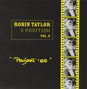

| Artist: | Robin Taylor |
| Title: | X Position Vol 2 |
| Label: | Marvel of Beauty MOBCD 015 |
| Length(s): | 47 minutes |
| Year(s) of release: | 1985/2005 |
| Month of review: | [03/2006] |
| 1) | Drogdensgade | 5.37 |
| 2) | Svaneklint I | 2.27 |
| 3) | Finanslovsforslag | 3.24 |
| 4) | Operette | 0.35 |
| 5) | RME | 3.54 |
| 6) | Ude Og Hjemme | 7.31 |
| 7) | Metal Pa Metal | 2.45 |
| 8) | Arkitekter | 7.19 |
| 9) | Svaneklint II | 6.47 |
| 10) | Flimmerland | 6.21 |
Taylor's releases can be split into two types: those in which sax player Karsten Vogel plays an important part, and those in which he does not. This disc is from the latter category. This usually results in friendly, almost dreamy sounding music (no worries, not new age). Which holds for a number of tracks on this disc. The majority of tracks have Scandinavian names not only, but also the lone feel so often present in Norwegian and Swedish music. In a way some of the music on this disc (for instance Drogdenskade or Svaneklint I and II) is akin -at least so in atmosphere- to that of the Norwegian guitarist Terje Rypdal. Finanslovsforslag is a vocal track which maintains the sort of mood heard in the instrumental bits.
But there are different moods: RME is sort of groovy and swinging, almost neurotic. Flimmerland has some neuroticism too, but combines this with a minimalist mesmerizing quality. Ude Og Hjemme starts with what sounds like a dialogue from a children's series, with very faint accompanying music in the back. Halfway it switches to music only, reminiscent of the opening two tracks, making it sound as if a new compositions has started. From this we float back into the dialogue. Next track Metal Pa Metal sounds like a song from the same series. Even though Arkitekter doesn't sound like from a children's series, it does contain both dialogue and singing. This sort of material is quite different from what we normally hear from Taylor.